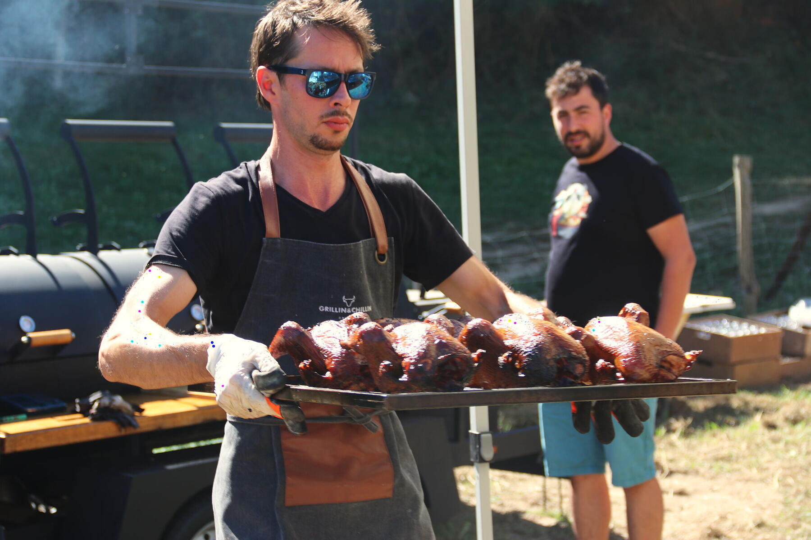
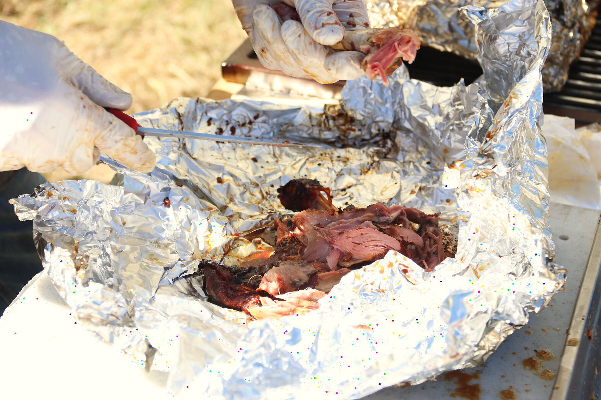
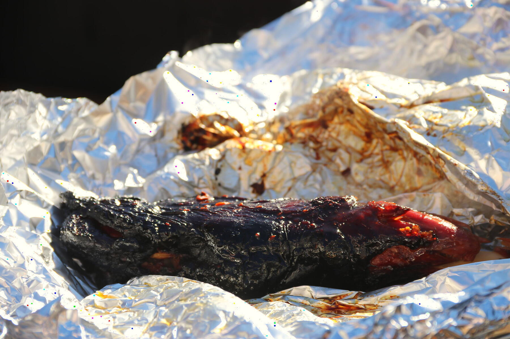

Sur mesure
Une offre clé en main, jusqu'à 400 invités
Mika arrive avec sa cuisine, cuit sur place, sert vos invités et repart. Vous n'avez qu'à recevoir.
- Mariages
- Entreprises et séminaires
- Fêtes privées et anniversaires
- Villages et associations
- Festivals
- Jusqu'à 400 invités


La cuisson et la découpe se font devant vos invités.
La fumée monte bien avant l'arrivée des invités. Le brisket se tranche, les épaules s'effilochent à la main. Les invités viennent regarder, et le repas commence avant de passer à table.
Ce qu'on mange
Un exemple. Le menu se compose avec vous, selon l'événement et le nombre d'invités.
-

Poulets entiers fumés
Peau dorée, chair fondante.
-

Épaules effilochées
Défaites à la main, devant vous.
-

Brisket
Poitrine de bœuf fumée, tranchée minute.
-

Porc et bœuf
De grandes pièces cuites des heures.
Questions
Demander un devisDe quoi avez-vous besoin sur place ?
Une place plane pour la remorque, accessible en voiture. Le smoker cuit au bois. Pour l'eau et l'électricité, on vérifie ensemble au moment du devis.
Et s'il pleut ?
Le smoker cuit sous la pluie. Pour le service, il faut un abri : tente, barnum ou préau. On le prévoit ensemble.
Végétariens, allergies ?
Dites-le dès votre demande. Mika en tient compte dans le menu.
Combien ça coûte ?
C'est sur devis. Le prix dépend du nombre d'invités, du menu et du service. Réponse sous 48 heures.